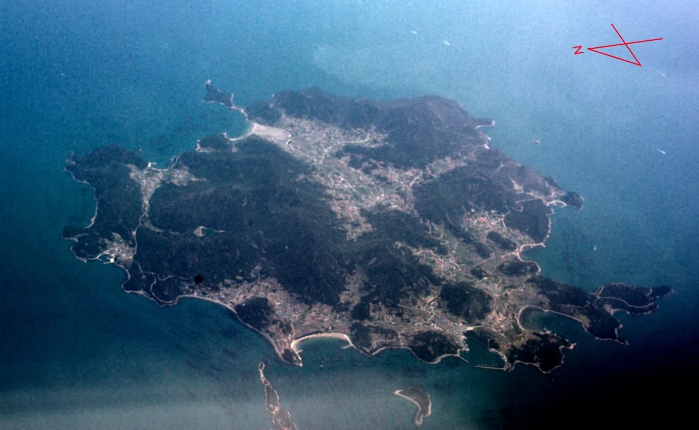
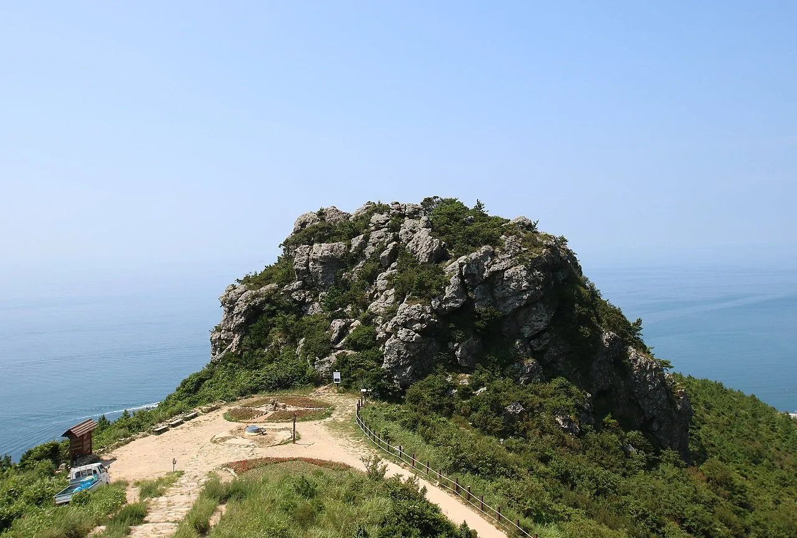
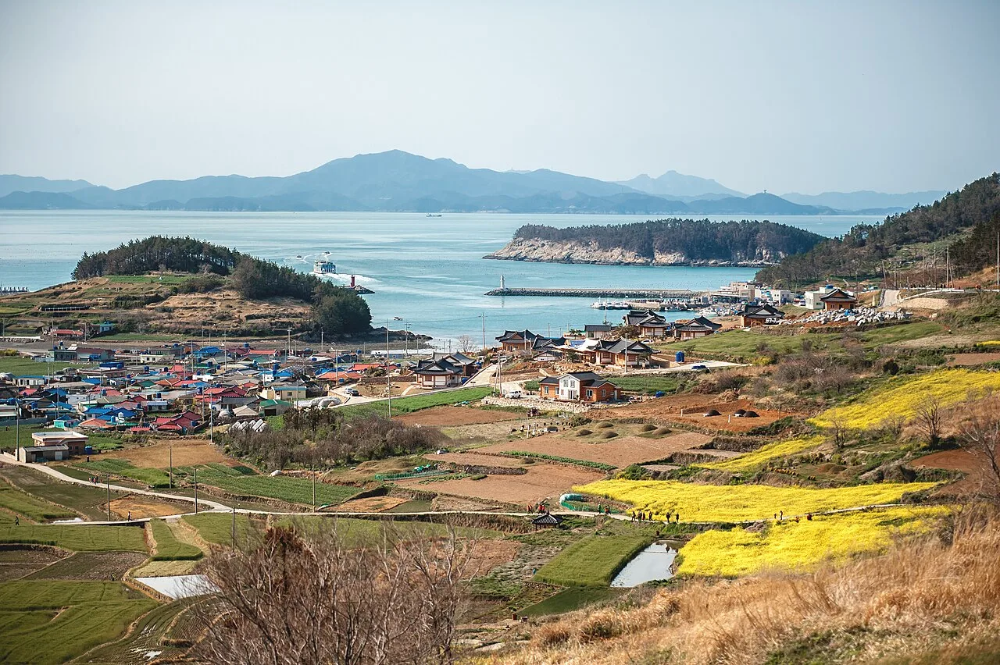
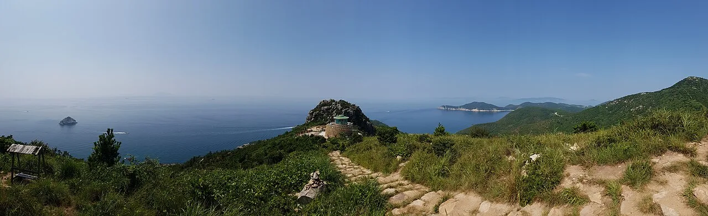

▲ 청산도 당리 슬로길과 드라마 '봄의 왈츠' 세트장 일대를 하늘에서 담은 모습. 봄철 유채꽃이 절정을 이루는 시기다
완도항에서 배로 50분. 다도해 남쪽 끝자락의 섬 하나가 2007년 아시아에서 가장 먼저 '느리게 살아도 좋은 곳'이라는 인증을 받았다. 완도군 청산면, 청산도다. 이미 1993년 영화 '서편제'로 이름을 알렸던 이 섬은 슬로시티 지정 이후 드라마 '봄의 왈츠' 촬영지, 봄철 유채꽃 명소로 차례로 유명세를 더해왔다. 문제는 정보가 여러 곳에 흩어져 있다는 점이다. 이 기사는 슬로시티 지정 배경부터 촬영지, 계절별 볼거리, 배편까지 방문 순서대로 정리했다.
미리 보기
- 청산도는 2007년 12월 아시아 최초 슬로시티로 지정, 2011년 '세계 슬로길 1호' 인증(11개 코스, 42.195km)
- 1993년 영화 '서편제', 2006년 드라마 '봄의 왈츠' 촬영지 — 당리에 오픈세트장 남아 있음
- 유채꽃은 3월 말 개화 시작, 4월 10~20일 절정으로 관람 기간이 짧은 편
- 구들장논은 국가중요농업유산 제1호로 지정된 독특한 계단식 논
- 완도항에서 배로 약 50분, 하루 6회 안팎 운항하며 기상에 따라 결항 가능
1. 청산도는 왜 아시아 최초 슬로시티가 됐나

▲ 하늘에서 본 청산도 일대. 섬 전체가 논밭과 마을, 완만한 해안선으로 이어진다 ⓒ Wikimedia Commons
슬로시티(Cittaslow)는 1999년 이탈리아에서 시작된 국제 운동으로, 자연과 전통을 지키며 느리게 사는 삶을 지향하는 도시·마을에 부여하는 인증이다. 청산도는 2007년 12월 1일 이 인증을 받으며 아시아에서 가장 먼저 슬로시티 반열에 올랐다. 원형이 잘 보존된 돌담과 해녀 문화, 계단식 논인 구들장논 등 고유한 생태·전통문화를 지켜온 점이 높은 평가를 받았다. 이후 2011년에는 섬 주민들이 마을과 마을을 오가던 오솔길 11개 코스(총 42.195km)가 국제슬로시티연맹으로부터 '세계 슬로길 1호'로 공식 인증받아, 걷기 여행지로서의 위상을 한 번 더 굳혔다.
2. 서편제와 봄의 왈츠 — 영화·드라마가 먼저 알린 섬
사실 청산도가 대중에 처음 알려진 계기는 슬로시티 지정보다 훨씬 앞선 1993년 영화 '서편제'였다. 임권택 감독이 이 영화에서 청산도의 돌담길과 황톳길을 배경으로 소리꾼 가족의 여정을 그리면서, 한적한 섬 풍경이 스크린에 처음 소개됐다. 이후 2006년 방영된 드라마 '봄의 왈츠'가 청산도 당리 마을 일대에서 촬영되며 섬의 인지도를 다시 한번 끌어올렸다.

▲ 청산도 범바위. 호랑이가 웅크리고 앉은 모습을 닮았다 해서 붙은 이름으로, 슬로길 코스 중 전망 포인트로 꼽힌다 ⓒ Wikimedia Commons
당리 마을에는 지금도 '봄의 왈츠' 촬영을 위해 지어진 유럽풍 이층집 오픈세트장이 남아 있다. '바닷가 언덕 위의 하얀 집'을 콘셉트로 만들어졌으며, 내부 거실·주방·침실까지 관람이 가능해 드라마 팬이 아니어도 한 번쯤 들러볼 만하다. 다만 세트장은 촬영 당시 모습을 그대로 유지하기 위한 관리 차원에서 운영 시간이나 개방 여부가 계절에 따라 달라질 수 있으니, 방문 전 청산도 관광안내소를 통해 확인하는 편이 안전하다.
3. 유채꽃과 청보리 — 계절별로 다른 청산도

▲ 청산도 포구 인근 유채꽃밭. 완도 본섬과 주변 섬들이 겹겹이 보이는 위치다 ⓒ Wikimedia Commons
청산도 여행의 계절 체감은 뚜렷하게 갈린다. 유채꽃은 3월 말부터 피기 시작해 4월 10일에서 20일 사이 절정에 이르는데, 실제로 만개한 모습을 볼 수 있는 기간은 2주 안팎으로 짧은 편이다. 같은 시기 슬로길 곳곳에서는 청보리가 초록빛 물결을 이루며 유채꽃과 대비를 이룬다. 이 시기에 맞춰 매년 청산도 슬로걷기 축제가 열리는데, 걷기 프로그램은 물론 '봄의 왈츠' 콘서트, 소리마당, 달빛 나이트 워크 등 섬 전역에서 다양한 행사가 진행된다. 2026년 축제는 4월 한 달간(4월 1일~30일) 열릴 예정이었다는 점을 참고하면, 봄철 방문을 계획할 때 시기를 가늠하는 데 도움이 된다.
봄이 아닌 계절에 방문한다면 유채꽃 대신 슬로길 자체의 매력에 집중하는 편이 낫다. 돌담과 해안 절벽, 구들장논 사이를 잇는 11개 코스는 계절과 무관하게 걷기 좋고, 여름에는 시원한 해풍을, 가을에는 한적한 정취를 느낄 수 있다.
4. 구들장논과 슬로길 — 11개 코스 42.195km

▲ 청산도 슬로길 능선 구간에서 바라본 바다 전망. 봉수대와 크고 작은 섬들이 함께 보인다 ⓒ Wikimedia Commons
구들장논은 경사진 산비탈에 온돌 구들장처럼 넓적한 돌을 깔고 그 위에 흙을 얹어 만든 청산도 고유의 계단식 논이다. 배수가 원활하지 않은 척박한 섬 환경에서 벼농사를 짓기 위해 조상들이 고안한 방식으로, 2013년 농림축산식품부가 국가중요농업유산 제도를 신설하며 제1호로 지정한 유산이기도 하다. 슬로길 코스 중 상당수가 이 구들장논 지대를 지나가기 때문에, 걷다 보면 자연스럽게 마주치게 된다.
| 항목 | 내용 |
|---|---|
| 슬로길 코스 수 | 11개 코스 |
| 전체 거리 | 총 42.195km(풀코스 마라톤과 동일 거리) |
| 국제 인증 | 2011년 국제슬로시티연맹 '세계 슬로길 1호' |
| 주요 경유지 | 구들장논, 범바위, 당리 돌담길, 도락리 해변 등 |
| 추천 시기 | 4월(유채꽃·청보리), 다만 연중 트레킹 가능 |
5. 배편 — 완도항에서 청산도 가는 법
청산도는 완도항에서 약 19.2km 떨어져 있으며, 여객선으로 약 50분이 소요된다. 완도항 여객선터미널에서 하루 6회 안팎(오전 7시부터 오후 5~6시까지, 2~3시간 간격) 운항하며, 청산아일랜드호·슬로시티청산도호·퀸청산호(증선) 등이 투입된다. 다만 계절과 요일에 따라 편성이 달라지고, 매년 봄 청산도 슬로걷기 축제 기간에는 주말 기준 하루 15회까지 증편되기도 한다. 차량을 싣는 도선료는 경승용차 기준 왕복 4만 원대부터 시작하고, 만 65세 이상은 왕복 1만 3,000원대, 초등학생 이하는 편도 4,000원대 수준으로 안내된다. 승객 예약은 한국해운조합이 운영하는 통합예약시스템 '가보고 싶은 섬'(island.haewoon.co.kr)에서 가능하다.
가보고 싶은 섬에서 청산도행 여객선 예약 확인 가능다만 이런 시간표와 요금은 기상 상황이나 선사 사정에 따라 자주 바뀌는 편이라, 출항 전날 반드시 완도항(061-552-9385) 또는 청산농협선박(061-552-9388)에 재확인하는 것이 안전하다. 특히 기상 특보가 있는 날에는 결항이 잦으니, 당일치기보다는 여유 있는 일정을 짜는 편을 권한다.
✅ 완도 청산도, 가기 전 체크리스트
· 2007년 아시아 최초 슬로시티 지정, 2011년 세계 슬로길 1호(11개 코스, 42.195km) 인증
· 1993년 영화 '서편제', 2006년 드라마 '봄의 왈츠' 촬영지 — 당리에 오픈세트장 존재
· 유채꽃 절정은 4월 10~20일 전후, 관람 가능 기간이 2주 안팎으로 짧음
· 구들장논은 국가중요농업유산 제1호로 지정된 청산도 고유의 계단식 논
· 완도항에서 배로 약 50분, 하루 6회 안팎 운항하나 기상에 따라 결항 가능
· 출항 전날 선사에 시간표·요금 재확인 권장